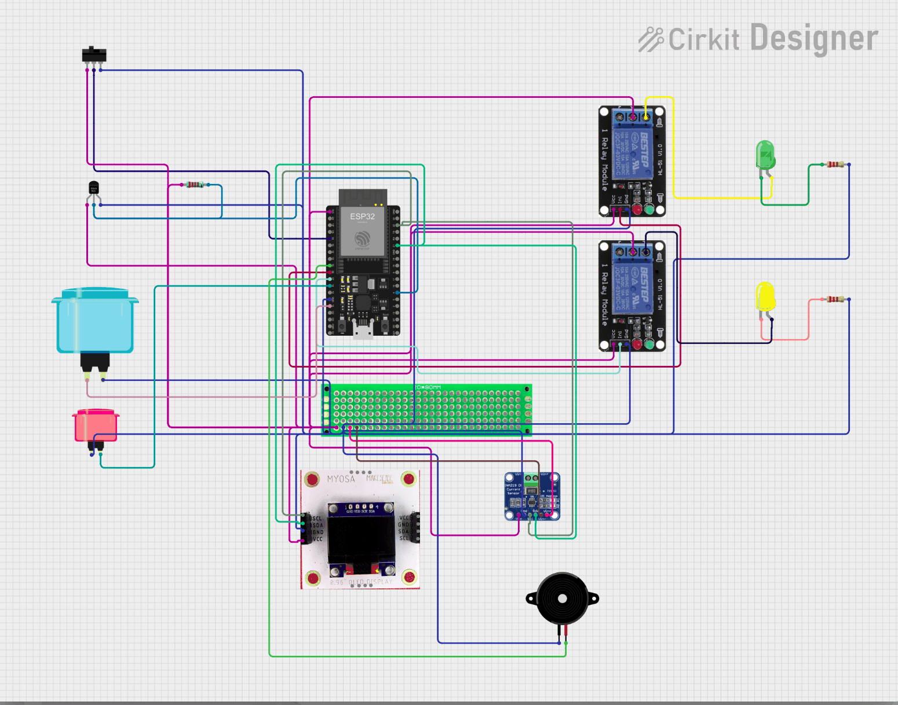

The outage
A health post that loses the grid still has to keep vaccines between +2 and +8 °C. Guatemala averaged 1.3 outages a month in 2017. That figure is from the World Bank Enterprise Surveys, firms, not clinics, and it does not say how long the outages lasted.
The policy
ClinicKeep decides on the device, in the same policy module that runs on the ESP32 and in the scenario engine. The network only reports. Zone A, the vaccine fridge, is never opened by software. About two seconds after the grid fails, only zone C, the waiting room, opens. Zone B, the hallway lights, opens later, when total autonomy falls under 6 hours. That threshold is a starting assumption. Once B opens, it stays open until the grid returns.
Safe time is the fridge’s remaining autonomy plus a thermal holdover, on the same clock, said as a duration: move the vaccines in X h Y min. A failed temperature sensor removes the holdover only. A failed power sensor while the grid is down opens B and C and keeps A.
| State | When | What it does |
|---|---|---|
| NORMAL | Grid present and stable for 5 s | A, B, and C closed |
| CORTE | Grid absent for 2 s | C opens. Energy accounting starts |
| AHORRO | Total autonomy under 6 h | B opens. A stays closed |
| CRITICO | Safe time under 1 h | Alarm: move the vaccines in the time that remains |
| RESTAURACION | Grid stable again | B closes, then C, 3 s later |
| FALLO_SENSOR | Power readings fail | With the grid down: open B and C, keep A |
The timers above are real seconds. The energy uses a simulated clock, badged SIM ×k, at 1, 60, or 600. The badge stays visible because the hours are not a wall-clock measurement.
What the same battery does
The didactic demo assumes 96 Wh, A at 8 W, B at 4 W, C at 3 W, and a holdover of about 0.53 h. The fridge runs out of energy at 6.4 h without ClinicKeep and at 11.0 h with it. With the holdover added, protected hours are 6.9 h and 11.5 h. That gain needs non-critical load. At 0% non-critical load the improvement is 0%.
Across 408 rows of the didactic sweep, the mean improvement is about +51%, from 0% up to about +373% in the extreme cell. A second sweep, one outage a day, shows that recharging barely depends on ClinicKeep. It depends on how long the outage is and how large the charger is.
The holdover is a single thermal mass, tau 4 h, an assumption, for a box without an ice lining. A PQS fridge with an ice lining holds for hours to days and needs less of this help. 7.5 °C, used as the model’s limit, is this project’s own margin under 8 °C. The PQS document gives the +2 to +8 °C band and measures holdover to +10 °C. It does not give 7.5. The 35 W figure cited for one AC vaccine fridge is WHO PQS E003-066, 0.85 kWh per 24 h. It is not the 8 W of the didactic demo.
The opening
The firmware is MicroPython on an ESP32, exercised in Wokwi. A switch stands in for the grid. A potentiometer stands in for a future power sensor on zone A. An OLED shows the state with no network. The public dashboard only displays what the device already decided. The calculator asks whether a battery and a charger cover the outage you type in, and it labels every input FUENTE or SUPUESTO.
-
Grid switch
GPIO34 · 3V3 · GND
-
Manual outage
GPIO14 · GND · key G
-
Zone A power
GPIO35 · potentiometer, a stand-in
-
Fridge temperature
GPIO4 · DS18B20 · 4.7 kΩ to 3V3
-
SIM clock
GPIO13 · key K · 1, 60, or 600
-
Alarm
GPIO25 · buzzer
-
ESP32 DevKit C V4
Zone A has no relay. The fridge stays closed.
-
Relay B · hallway
GPIO26 · NO contact to the green LED, 220 Ω
-
Relay C · waiting room
GPIO27 · NO contact to the yellow LED, 220 Ω
-
OLED
SDA GPIO21 · SCL GPIO22 · address 0x3C

ClinicKeep does not generate energy. It is not a certified medical device and it does not replace a cold-chain protocol. It does not use machine learning. A physical prototype is the next step. A district radio report over LoRaWAN is drawn as architecture only. It is not simulated, and it would report, not control.
Open the simulated demo → Open the sizing calculator → Read the repository →